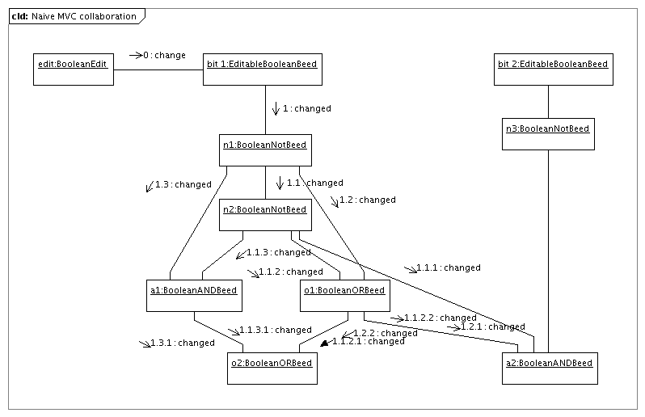
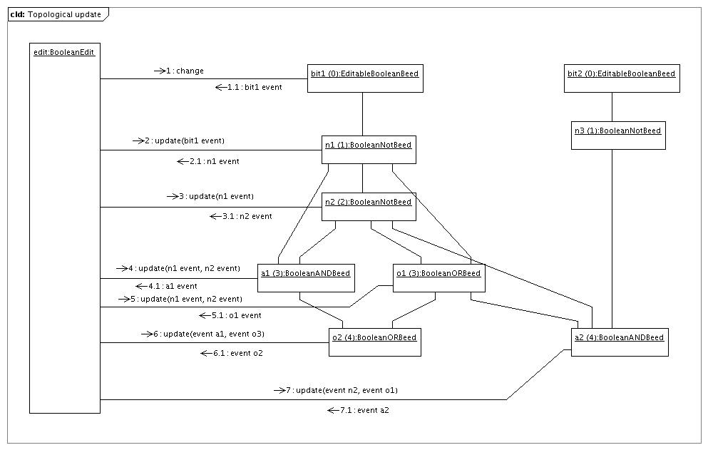

To illustrate why we need a topological update algorithm to update dependent beeds, and the classic MVC approach doesn't work, let us consider a simple example using boolean beeds.
In this example, there are two {@link org.beedraz.semantics_II.expression.bool.EditableBooleanBeed EditableBooleanBeeds}, called bit1 and bit2. Upon these two editable beeds, a beed structure is build, using {@link org.beedraz.semantics_II.expression.bool.BooleanNotBeed BooleanNotBeeds} n1, n2 and n3, {@link org.beedraz.semantics_II.expression.bool.BooleanANDBeed BooleanANDBeeds} a1 and a2, and{@link org.beedraz.semantics_II.expression.bool.BooleanORBeed BooleanORBeeds} o1 and o2, that represents the following expressions:
n1 ∴ ! bit1n2 ∴ ! n1n3 ∴ ! bit2a1 ∴ n1 && n2a2 ∴ o1 && n2 && n3o1 ∴ n1 || n2o2 ∴ a1 || o1With beeds, the boolean value of the {@link org.beedraz.semantics_II.expression.bool.EditableBooleanBeed EditableBooleanBeed} bit1 can be changed by performing a {@link org.beedraz.semantics_II.expression.bool.BooleanEdit}. When the semantic state of bit1 or bit2 changes, dependent beeds might change value to. They need to be warned, and update their value to the value of the changed operand, recursively. The change, whose final cause is the {@link org.beedraz.semantics_II.expression.bool.BooleanEdit}, propagates over the beed structure. The final intention is that external listeners, e.g., fields or other end-user displays, or other peripheral structures, are warned of changes in the beeds they represent, so that they can update their visualization. This occurs for both editable and dependent beeds.
From the above definitions, we can at least infer:
a1 ∴ n1 && n2 == ! bit1 && ! n1
== ! bit1 && ! ! bit1
== ! bit1 && bit1
== false
a contradiction, and
o1 ∴ n1 || n2 == ! bit1 || ! n1
== ! bit1 || ! ! bit1
== ! bit1 || bit1
== true
a tautology, and
o2 ∴ a1 || o2 == false || true
== true
also a tautology. In other words, a1 should always be false, and o1 and o2 should always be true. The structure is shown in the collaboration diagram below.
Here, we are concerned with the algorithm that updates the dependent beeds, i.e., the algorithm that propagates the change over the system. First, we will show that a naive, MVC based algorithm, doesn't function. Next, we will show which algorithm does work, and explain how it is implemented.
Below you can find a collaboration diagram that illustrates how dependent beed updates would work with a naive MVC based algorithm. Dependent beeds would register a listener object with their operands, e.g., a1 would register a listener object with n1 and n2. The listener object implements a Listener interface, that features a method void changed(Event event);. In the method body, the listener object recalculates the new boolean value of the beed it works for, and if that is different from the old value, all listeners registered with the current beed are warned. This includes both external listeners and further dependent beeds.
In this way, the updates propagate through the beed graph structure, in a depth-first fashion, as if the graph was a tree. As you can see in the collaboration diagram, there are negative effects.
 It is clear that a1, a2, and o1 are warned twice each, and will recalculate their value, and also warn external listeners, twice. o2 is even updated four times, of which two times by the same object a1 and two times by the same object o1. The least we can say, is that this is inefficient. Furthermore, also external listeners are warned more than once: since, e.g., a1 is visited twice by this algorithm, it will potentially warn external listeners twice of a change in its value, where only the last change reflects the final value. The first warning will trigger the external listener with an intermediate value. A further problem is that this intermediate value might not be semantically valid. This is demonstrated in the applet below, which shows the naive algorithm. The demo can also be used locally, as an application (download the application, and double-click the downloaded jar file, or start it via the commandline with java -jar LogicCircuitsNaiveDemo.jar or java -classpath LogicCircuitsNaiveDemo.jar LogicCircuitsDemo).
The applet is started by clicking on bit1 or bit2. In the nominal mode, you can see the results: clicking on bit2 reverses the value of n3 and a2, and clicking on bit1 reverses the value of n1, n2 and a2, while leaving the value of a1, o1 and o2 untouched, as expected from the logic equations above.
When the Demo Mode is Enabled, the beeds send out events when listener processing starts and ends. During event processing, their border is painted blue. What happens is recorded and played in slow motion, to make it possible for you to study the behavior. The slider controls the speed (higher numbers make a slower demonstration). As you can see from the demo, the depth-first algorithm happens as described, and, e.g., a1 is visited twice when you click bit1.
Furthermore, you might observe that a1 turns green (true), and o1 or o2 turn red (false) as the algorithm works, although we have shown that logically, a1 is a contradiction and o1 and o2 are tautologies. This does not happen al the time, and what happens exactly differs from run to run. If you don't observe this behavior, reload this page (reloading the applet) and try again.
First of all, it is clearly a bad thing that, e.g., o2 is shown red to the end user ever. This also happens when the applet is run with Demo Mode disabled, only then it goes too fast for the user to notice. You would see a flicker on a slower computer. But, the fact that the behavior is non-deterministic, can be considered a problem in its own right. The reason for the random effect is that listener registration is done using {@link java.util.HashSet}, and the order in which the elements of such sets are presented during iteration is random. Whether or not faulty intermediate states happen or not, depends on the order in which listeners are visited. E.g., if n1 changes from true to false, and warns o1 before it warns n2, o2 will see n1 in its new state (false) and n2 in its old state (! true == false) , and decide that it has to be false (false || false == false), which, o2 being a tautology, should never happen.
The solution to the problem is to ask the dependent beeds to update themselves only once, in topological order. This is shown in the collaboration diagram below.
 Dependent beeds now register a more involved listener object with update sources, in whose changes in semantic state they are interested (most often, the update sources are the operands of the dependent beed). All beeds can be update sources for other beeds. This involved listener extends {@link org.beedraz.semantics_II.Dependent}, and we refer to it as the dependent. Dependents implement a method with signature protected Event filteredUpdate(Map<UpdateSource, Event> events, Edit<?> edit). Dependents implement this method to recalculate their semantics state, in reaction to changes in all their update sources at once. To this end, the are given a map of events, each event describing the change in one of their update sources, instead of one event, as in the traditional MVC pattern. The filteredUpdate method will handle all these changes holistically. If finally the filteredUpdate method decides that the semantic state of the current beed has changed, it creates an event describing that change, and returns it to the object that controls the topological update algorithm. This controlling entity will then use this event to ask dependents of the current beed to update themselves, when their time has come. The topological nature of the algorithm makes sure that no beed is asked to update itself before all of its update sources are asked to do so first. If the current beed decides that it semantic state does not change, it returns null, and the algorithm will not bother the dependents of the current beed if there is no other reason to do so.
When the relevant part of the beed structure is visited, the object that controls the topological update algorithm contacts each of the beeds again, in topological order, and asks each beed to now warn (external) listeners with the event it created earlier.
Using this algorithm, each beed is only activated once, immediately has the correct state, and there are no faulty intermediate states. Also, external listeners are only called once the entire beed structure is recalculated, so that to outside entities, the action seems atomic.
The difference between dependents and listeners is mostly there for reasons of convenience. In principle, also peripheral or external code is allowed to register dependents with update sources. However, implementing a dependent is much more difficult than implemention a traditional MVC listener, and listeners see the change as atomic, instead of as a propagating change ripple, during which public type invariants are not upheld.
The biggest complexity in the topological update algorithm is in finding the topological order in which dependent beeds should be visited.
An algorithm is known for the topological sorting of an acyclic directed graph (see, e.g., chapter 14.5.1 in Data Structures & Problem Solving using Java, 2nd Edition by Mark Allen Weiss). It works by traversing through a FIFO structure while it is being build.
bit1 |
n1 |
n2 |
a1 |
o1 |
o2 |
bit2 |
n3 |
a2 |
| 0 | 1 | 1 | 2 | 2 | 2 | 0 | 1 | 3 |
In a preparatory step, the indegrees are calculated for each node in the acyclic directed graph, i.e., in our example, the number of update sources a beed depends on. The result is shown to the right.
Next, we place the beeds that have indegree 0 in the FIFO structure. Their respective order is irrelevant. In our example, bit1 and bit2 are placed in the FIFO structure. Then, iteratively, we look at the first beed in the FIFO structure, in this case, bit1. We subtract 1 of the indegrees of all beeds that depend directly on the current beed. If one of those beeds now has indegrees 0, it is place at the end of the FIFO structure. In the example, when handling bit1, n1 would be added to the FIFO structure.
We repeat this with the next beed in the FIFO structure, until we reach the end of that structure. Finally, all beeds that can be reached from the beeds with initial indegrees 0 will appear in the FIFO structure, and will have been visisted, in topological order.
The progression of the algorithm is shown in the second table below. Each row signifies an iteration step. The first column shows which beed is being handled. The last column show the evolution of the FIFO structure.
bit1 |
n1 |
n2 |
a1 |
o1 |
o2 |
bit2 |
n3 |
a2 |
bit1, bit2 |
||
bit1 |
0 | 1 | 2 | 2 | 2 | 1 | 3 | bit1, bit2, n1 |
|||
bit2 |
1 | 2 | 2 | 2 | 0 | 3 | bit1, bit2, n1, n3 |
||||
n1 |
0 | 1 | 1 | 2 | 2 | bit1, bit2, n1, n3, n2 |
|||||
n3 |
1 | 1 | 2 | 1 | bit1, bit2, n1, n3, n2 |
||||||
n2 |
0 | 0 | 2 | 1 | bit1, bit2, n1, n3, n2, a1, o1 |
||||||
a1 |
1 | 1 | bit1, bit2, n1, n3, n2, a1, o1 |
||||||||
o1 |
0 | 0 | bit1, bit2, n1, n3, n2, a1, o1, o2, a2 |
||||||||
o2 |
bit1, bit2, n1, n3, n2, a1, o1, o2, a2 |
||||||||||
a2 |
bit1, bit2, n1, n3, n2, a1, o1, o2, a2 |
This algorithm works, but has important downsides.
First of all, it is destructive with regards to the indegrees. The preparatory step needs to be executed before the topological iteration can start, in in that preparatory step, each beed in the structure (or perhaps a stand-in) needs to be visited to reset the indegrees. In our case, we also cannot cache this information, since the beed structure itself can change. Since we do not yet have a topological order at that time, the only resolve we have is to do a depth-first walk through the beed structure, as described above, possibly visiting each node several times, or keeping complex state remembering which part of the graph we already visited. This obviously defies the intention of using the topological walk.
Secondly, this algorithm involves all beeds in a beed structure every time. In our case however, when we, e.g., click on bit1, we need not visit bit2 or n3. We are really only interested in a topological walk through the partial graph of dependent beeds that can be reached starting from bit1. This seems not to be very relevant in the example presented here, but in real-life beed structures, it makes a big difference.
The Beedraz algorithm for topological sorting was worked out in the first quarter of 2007 by Jan Dockx. This algorithm takes a different approach. It works not on the basis of the indegrees of dependent beeds, but on the maximum root update source distance (MRUSD) of beeds.
| bit1 | bit2 | n1 | n2 | n3 | a1 | a2 | o1 | o2 |
|---|---|---|---|---|---|---|---|---|
| 0 | 0 | 1 | 2 | 1 | 3 | 4 | 3 | 4 |
Root update sources are update sources that do not depend on other update sources. They are the potential final source of changes that can propagate through the system. The maximum root update source distance of a root update source is 0. In the example, editable beeds are root update sources (the two {@link org.beedraz.semantics_II.expression.bool.EditableBooleanBeed EditableBooleanBeeds} bit1 and bit2). The maximum root update source distance of a dependent beed is one larger than the maximum of the maximum root update source distances of its update sources. The table to the right shows the maximum root update source distances for the beeds in the example.
Given the maximum root update source distances for all beeds, we can build the topological order in a structure that keeps entries sorted by ascending maximum root update source distance as follows. We start by adding the root update source that is changed to the sorted structure. We employ a cursor to walk through this structure, until we reach the end. When we deal with the current element, we ask it to update itself, and when the current element answers that it has not changed (it returns null), we simply advance the cursor. If the current element answers that is has changed (with an event describing the change) we save the event, and ask the current element for its dependents. We add all these dependents to the sorted structure at their sorted position, and we advance the cursor.
The progression of the algorithm is shown in the table below. The first column shows the sorted datastructure that is being build. The current beed is marked in each iteration step. The second column shows the dependents of the current beed in each iteration step. The dependents that are not yet in the sorted data structure are marked. Note that in step 3, neither a1 nor o1 is new. Note also that we are not interested in the dependents of a1 and o2. These beeds, when polled, decide that their semantics state does not change (they are, as shown higher, a contradiction and a tautology), and return null, and then the algorithm does not deal with their dependents. As a result, in this example, o2 never appears in the sorted data structure, and is never visited. The algorithm stops propagation when it can decide that parts of the graph will not change. Note further that bit2 and n3 are never involved in the algorithm. Finally, we have visited all relevant beeds in topological order, and we have stored references to the relevant beeds in the sorted data structure, so we can iterate over it again to ask the changed beeds to send events to regular listeners.
| MRUSD sorted data structure | dependents of current beed | |
|---|---|---|
| 1 | bit1 | {n1} |
| 2 | bit1, n1 | {a1, n2, o1, a2} |
| 3 | bit1, n1, n2 , a1, o1, a2 | {a1, o1} |
| 4 | bit1, n1, n2 , a1, o1, a2 | - |
| 5 | bit1, n1, n2 , a1, o1, a2 | - |
| 6 | bit1, n1, n2 , a1, o1, a2 | {} |
The implementation of this algoritm in Beedraz is higly optimized for speed, as that became necessary in a complex, mathematically oriented application. The algorithm also allows for atomic changes of more than one root update source. It is easy to see that we can fill the sorted data structure initially with as many root update sources (MRUSD == 0), in any order, as we want.
The problem that remains, is the maintenance of the maximum root update source distance for each beed in the beed structure. Luckily, this problem is less complex than the preparatory step in the naive topological sorting algorithm.
Since with beeds, the beed structure can change at any time, the maximum root update source distance can change too. It possibly changes when update sources are added to or removed from a dependent beed.
If the MRUSD of the newly added update source is greater then or equal to the current MRUSD of the dependent beed, the MRUSD of the dependent beed must change to the MRUSD of the new update source plus one. This is not difficult, but the venom is in the fact that this change now propagates to the dependents of our dependent beed. They have to be warned of the new MRUSD value of our dependent beed, update their MRUSD if needed, and propagate the change further. Currently, a recursive algorithm that does a depth-first walk through the transitive closure of the dependents is employed. It might be possible to optimize this algorithm, using the existing MRUSD's of the dependents.
If an update source is removed, and its MRUSD is the current MRUSD of the dependent beed minus 1, we need to recalculate the MRUSD of our dependent beed by iterating over all our update sources. Also this change in MRUSD of the dependent beed propagates to the dependents of our dependent beed. This algorithm is even more complex. It is the main reason for complexity in the contract of {@link org.beedraz.semantics_II.Dependent} and in the methods in{@link org.beedraz.semantics_II.Beed} that deal with dependent registration.
One might defend the position that updating the MRUSD when an update source is removed, is not necessary in practice. If that strategy would be used, the MRUSD of beeds could grow, but never become smaller. This is possible, since, for the algorithm, it is only important that the MRUSD of a dependent is strictly greater then the MRUSD of all its update sources. The amount by which it is greater is irrelevant. Finally, we could get into trouble when, after extensive use, the MRUSD of some beed would grow beyond {@link java.lang.Integer#MAX_VALUE} (to store the maximum root update source distance, we employ an int instance variable in dependents), but in practice this is highly unlikely. This would make the code much less complex, remove complexity in the contracts that deal with dependent registration, and make structural changes more performant. Also, by using MRUSD + 5, e.g., instead of MRUSD + 1, when we need to update a dependent beed's MRUSD, we might get less propagation of MRUSD changes, again making structural changes more performant.